Effects Bus Tracks¶
In this chapter, you'll learn how to set up an effects bus track in Waveform. A bus track is configured to be shared by multiple tracks within your Edit. Sometimes this is called a master effects bus. This is an extremely common production technique that originated when recording was done using large mixing consoles. When mixing with a console, effects like reverb and delay are created using outboard hardware. In the early days, studios only had a limited number of reverbs and chambers to use. The solution was to use a common bus for the effect and then send the desired amount of each track over to the effect bus.
It works the same way in Waveform. You dedicate a track to the effect and then use a special Aux Send plugin to send part of the signal from your instrument, vocal, or drum tracks to over to the effects bus track.
Create the Bus Track¶
To get started create a new track. The fastest way is select any track and hit T. That creates a new blank track right after the one that you started with. You can drag the new track anywhere you'd like.
Next, click on the track name, and rename the track by editing Name in properties. In this example you can use a reverb effect and name it "Master Reverb."
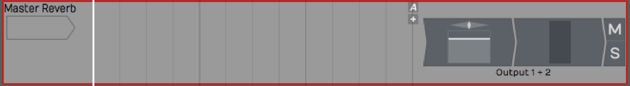
New, Blank Track
Adding the Effect Plugin¶
The next step is to insert an effect plugin on the bus track. In this example we're using Waveform Reverb.
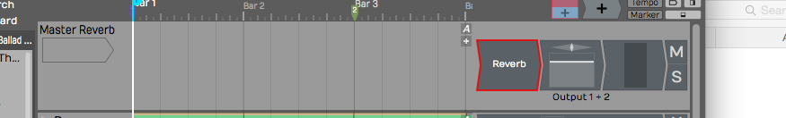
Insert the Reverb Plugin
Check that the Dry Mix fader is turned all the way down. You want only the wet signal to go through Reverb. You can tweak the other parameters later, after you get some sound going through it.
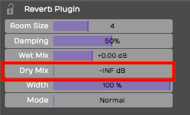
Set the Mix to 100% Wet
💡 Tip: If the plugin you're using has a mix control, make sure it's turned to the 100 % wet position. The critical thing here is you don't want any dry signal being mixed back in through a different, parallel path.
Aux Return Plugin¶
So this seems like a pretty ordinary track. How do you make this track behave like a bus? You do so by inserting the Aux Return plugin, one of the built-in plugins in Waveform. It pairs up with the Aux Send plugin for just this purpose.
Insert the Waveform Aux Return plugin to the left of Reverb.
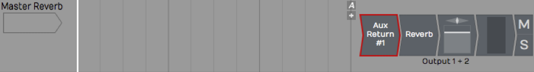
Insert the Aux Return Plugin
Notice that it is labeled Aux Return #1 in properties. Also, you can see it is automatically assigned to the next available bus: in this case *Bus #1.
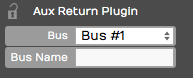
Automatic Bus Assignment for Aux Return**
It's optional but you can type in something descriptive for the Bus Name property. In this case Verb 1.
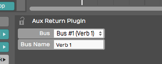
Adding a Descriptive Bus Name**
The descriptive name appears right on the plugin thumbnail in the mixer, making things much clearer. This will help even more when you have several effects buses configured.
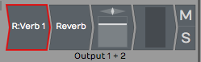
How the Bus Name Appears in the Mixer
Adding Aux Sends to the Channels¶
Now that your effects bus track is set up, all you need to do is insert an Aux Send plugin on each track where you would like to apply this effect.
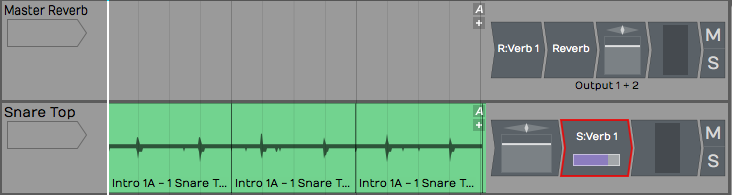
Insert Aux Send on a Track
This is important. Insert Aux Send after the Volume & Pan plugin. This way as you adjust the track volume, you're also adjusting the amount sent to the bus track proportionally. Even if you lower the volume all the way down, you won't hear a ghosting of the effects bus from that track playing in your mix.
📝 Note: On a conventional mixing console, this position is called "post fader." Hardware consoles will have a special switch or maybe even a special knob that allows you to send post fader. In Waveform you do this in a very direct way: rearrange the order of the fader so that it comes before the Aux Send plugin.
Adjusting the Send Level¶
Now that it's all set up, as you play back, adjust the send level by clicking on the Aux Send plugin, and adjusting the Send level slider that pops up.
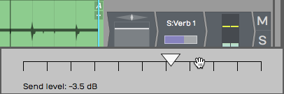
Adjust the Aux Send Level
Alternatively, you can just click on the Aux Send plugin and adjust Send in the Actions panel. The more you turn it up the more effect you'll get. As you turn it down, you get less and less of the effect.
Assigning the Aux Bus¶
You can create as many effects bus tracks as you need for your mix. You might want a reverb for drums, a different reverb for vocals, a delay for vocals, and other delay for guitars. The steps to set up the additional buses are the same as outlined above. You just need to make sure your Aux Sends and Aux Returns are assigned to the correct bus numbers.
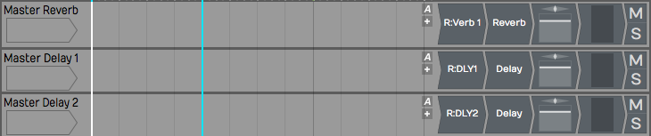
Setup with Three Bus Effects Tracks
When we set up Verb 1, we used Bus #1. For DLY1 WE HAVE used Bus #2 and gave it a unique name.
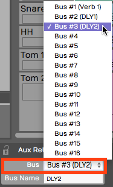
Assigning Buses to the Aux Returns**
As you insert the Aux Send plugin onto each track, select which effect you want to use by choosing the correct bus.
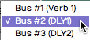
Selecting the Effects Bus for Aux Send
💡 Tip: Feel free to assign more than one Aux Send to the same track.
Your effects tracks aren't limited to a single plugin. You can create an entire effects chain, for exampling combining compression, EQ, reverb, or delay on a single bus track.
Solo Isolate¶
There's a special solo mode that you will likely to want to use on bus tracks, called Solo isolate. To do so, right-click the Solo button on one of your bus tracks and choose the option Solo isolate.
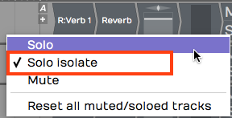
Enable Solo Isolate on Your Effects Tracks
Notice how that the Solo button changes from "S" to "SI." With Solo isolate enabled, if you solo any track, this track will also be soloed. This is useful because when you solo a track, you usually want to hear it along with its send effects. If you don't use Solo isolate on your bus tracks, the effects get muted when you solo a track.
💡 Tip: Waveform includes a track tagging feature that allows you to quickly view any tracks that share a tag. You can tag all of the effects buses with the tag "FX.", which makes it really easy to pull up a view of all of your effects bus tracks using the Tracks tab in the Browser. Take organization one step further by giving your bus tracks a specific color.
Effects Bus Track Presets¶
If you commonly use a similar set of send effects, you can create some presets for your bus tracks, and then recall them for your next project. To do so, right-click the track name and select Save preset > whole track.
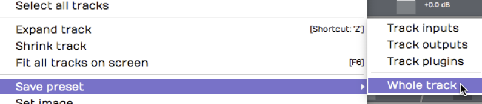
Saving an Effects Track Preset
In the Preset Details dialogue box, put in an appropriate name for your preset such as "Master Reverb." In the tags area, the tag Track will automatically be entered. You can also add another tag such as Effects Bus.
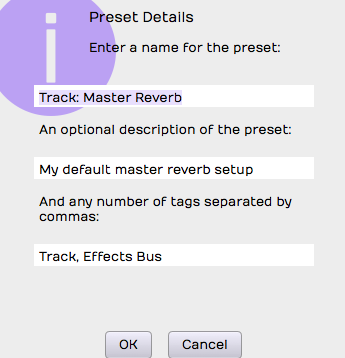
Preset Details Dialog Box
Remember to separate tags with a comma. Click OK, then the next time you want to create a very similar effects bus track, go to the Presets tab in the Browser and filter by Effects Bus. Drag the preset onto any track to instantly configure your favorite master effects set up.
Moving On¶
In a full mix, you may have four or more effects buses configured at once, such as two reverbs and two delays: drum reverb, vocal reverb, stereo delay, and a mono slap back delay.
One key is to group the bus tracks together and to put them at the top of the Edit. You can also make them a unique color, tag, and label them appropriately.
Once you get a hang of the set up, using effects bus tracks in Waveform is very straight forward.